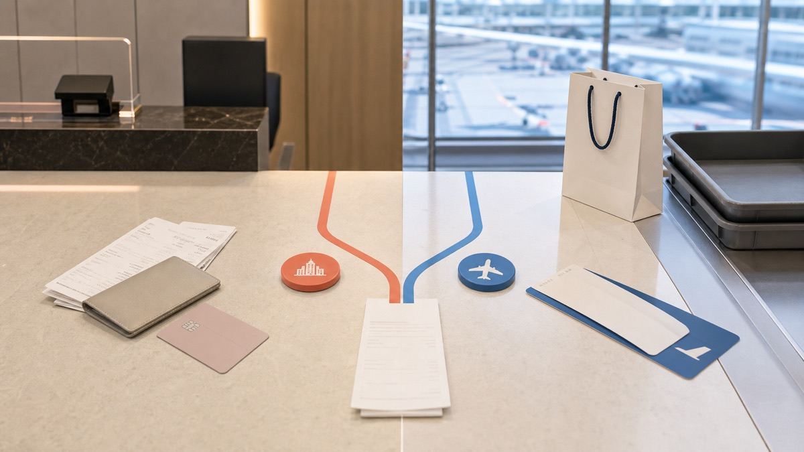
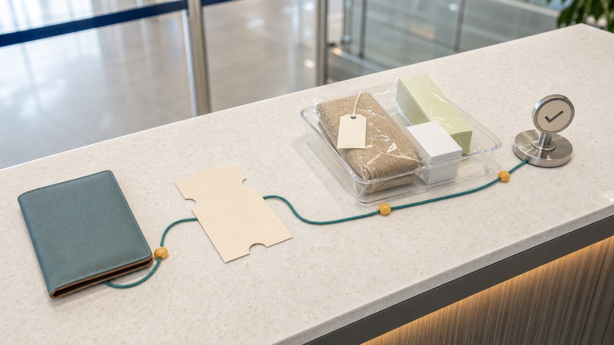

<style>
.keg-post{color:#172033;font:17px/1.72 Arial,Helvetica,sans-serif;max-width:860px;margin:0 auto}.keg-post *{box-sizing:border-box}.keg-post h1{font-size:34px;line-height:1.18;margin:0 0 18px}.keg-post h2{font-size:25px;line-height:1.25;margin:38px 0 14px;padding-top:8px;border-top:1px solid #d9e3ea}.keg-post h3{font-size:20px;line-height:1.35;margin:22px 0 8px}.keg-post p{margin:0 0 18px}.keg-post a{color:#2563eb;font-weight:700;text-decoration:none;border-bottom:1px solid rgba(37,99,235,.3)}.keg-post figure{margin:0 0 28px;overflow:hidden;border:1px solid #d9e3ea;border-radius:16px;background:#f8fbfd}.keg-post img{display:block;width:100%;height:auto}.keg-post figcaption{padding:10px 14px;color:#526173;font-size:14px}.keg-post__lead{padding:18px 20px;border-left:5px solid #0f766e;background:#eefaf7}.keg-post__note{padding:16px 18px;border-left:5px solid #b45309;background:#fff8e8}.keg-post table{width:100%;margin:14px 0 26px;border-collapse:collapse;border:1px solid #d9e3ea}.keg-post th,.keg-post td{padding:13px 15px;border-bottom:1px solid #d9e3ea;text-align:left;vertical-align:top}.keg-post th{background:#eaf3ff}.keg-post ol,.keg-post ul{margin:0 0 24px;padding-left:24px}.keg-post li{margin:0 0 12px}@media(max-width:640px){.keg-post{font-size:16px}.keg-post h1{font-size:29px}.keg-post h2{font-size:22px}.keg-post table{display:block;overflow-x:auto}}
</style>
<article class="keg-post">
<h1>Korea Tax Refund: Airport or Downtown? A Practical Choice Guide</h1>
<figure></figure>
<p class="keg-post__lead">For most short-stay visitors, the choice is simple: use a downtown refund counter when you want the money earlier and can complete the required departure validation later; use the airport when you prefer one final process and have enough time before your flight. An even easier third option is an immediate refund at the store, when the purchase and store qualify. Downtown processing does not remove the customs step at departure, so it is a time-shift, not a way to skip export confirmation.</p>
<p><strong>Last checked:</strong> August 4, 2026. Counter locations, operating hours, supported payment methods, and inspection thresholds can change. Recheck the linked Korea Tourism Organization, Korea Customs Service, and airport pages before departure.</p>

<h2 data-section="decision">Quick Answer: Which Refund Route Fits You?</h2>
<table>
<tr><th>Your situation</th><th>Best starting choice</th><th>Main trade-off</th></tr>
<tr><td>The shop offers an immediate tourist refund and your purchase is within the limits</td><td>Take the immediate refund at checkout</td><td>Fastest route, but only participating stores and eligible transactions qualify.</td></tr>
<tr><td>You have several shopping days left and want cash or card credit started before departure</td><td>Use a downtown counter or kiosk run by the operator printed on your voucher</td><td>You may still need export validation at the airport and may need an international credit card as security.</td></tr>
<tr><td>You have mixed vouchers from different refund operators</td><td>Use the airport</td><td>Airport facilities generally handle more operators, but queues and terminal timing matter.</td></tr>
<tr><td>Your goods might be inspected, are valuable, or will go in checked baggage</td><td>Plan the airport customs sequence carefully</td><td>You must keep the goods and documents available until customs requirements are satisfied.</td></tr>
<tr><td>Your flight is very early or late</td><td>Check staffed hours and kiosk options before choosing</td><td>A kiosk may be available when a cash counter is closed, but the refund method can be more limited.</td></tr>
</table>

<h2 data-section="orientation">Before You Choose: Understand the Three Different Systems</h2>
<p>Korea uses several phrases that sound similar but lead to different actions. A duty-free store sells eligible goods without the relevant tax included at the time of sale. A tourist tax-refund store usually charges a tax-inclusive price and issues a separate refund voucher or record. An immediate-refund store verifies your passport at checkout and deducts the eligible tax before you pay. If tax was already deducted immediately, do not expect a second refund at the airport.</p>
<p>The Korea Tourism Organization says the general minimum purchase is KRW 15,000. Its current comprehensive guide lists immediate refund eligibility for a single transaction of at least KRW 15,000 but under KRW 1 million, with total immediate-refund purchases of KRW 5 million or less during the trip. For a downtown general refund, the guide lists a single-receipt ceiling of KRW 6 million. These are system limits, not a promise that every store, operator, card, or item will be accepted.</p>
<p>Eligibility also depends on the visitor and the goods. The official tourism guidance covers foreign visitors staying in Korea for less than six months and certain overseas Koreans meeting separate residency and stay conditions. Goods normally must leave Korea within three months of purchase. Opened or used goods and services that customs cannot physically verify can be ineligible. If your immigration, employment, diplomatic, military, or residency status is unusual, verify it with the official sources rather than assuming that a foreign passport alone is enough.</p>
<p>A normal card receipt is not always the tax-refund document. Ask whether the store participates before paying, show your physical passport when requested, and make sure you receive the operator's refund voucher or electronic record. Keep it with the matching receipt. If the store cannot create the refund record after payment, a later airport visit may not fix the missing paperwork.</p>

<h2>Airport vs Downtown: The Real Difference</h2>
<p>A downtown refund lets you process eligible vouchers at a staffed desk or kiosk while you are still in the city. Depending on the operator and method, you may receive cash or begin a card or mobile refund. The practical advantage is moving part of the work away from departure day. The important catch is that the refund remains connected to the export of the goods. The official KTO guide instructs downtown users to present the purchased items, refund documents, and passport for customs confirmation when leaving Korea.</p>
<p>An airport refund keeps the major steps together: validate the export when required, then receive or initiate the refund at a desk or kiosk. This is often better when you have vouchers from several operators, are unsure which downtown desk handles your form, or do not want a temporary card authorization connected to an advance cash refund. The cost is time. Check-in, baggage handling, customs inspection, immigration, and refund collection may occur in different zones.</p>
<p>At Incheon Airport, the airport's own instructions distinguish carry-on purchases from goods intended for checked baggage. For carry-on items, keep the refund-eligible goods and documents with you and use the departure-hall kiosk; if the machine sends you to inspection, present the passport, unopened goods, and purchase confirmation to customs. For checked items, tell the airline staff before the bag disappears into the system. A bag that contains inspectable goods should not be checked normally first and discussed later.</p>

<figure><figcaption>Keep the passport, refund voucher, and unopened goods available until departure validation is complete.</figcaption></figure>

<h2 data-section="steps">Step-by-Step: Use Downtown Without Creating an Airport Problem</h2>
<ol>
<li><strong>Check the store and transaction before paying.</strong> Look for a tourist tax-refund service mark and ask whether the transaction is immediate refund or general refund. Present your passport at checkout if requested.</li>
<li><strong>Collect the correct record.</strong> Keep the store receipt and the separate tax-refund voucher or electronic record. Confirm the refund operator printed on it, because a downtown booth may handle only its own company's vouchers.</li>
<li><strong>Do not use the goods too early.</strong> Customs guidance describes purchased goods as unopened and unused for outbound confirmation. Keep packaging intact when inspection is possible.</li>
<li><strong>Choose a matching downtown channel.</strong> Use the operator named on the voucher. Bring the passport, voucher, purchased goods, and an international credit card. The KTO guide lists those items for downtown processing.</li>
<li><strong>Read the refund method and security terms.</strong> An advance cash refund can involve a card authorization or charge if departure validation is not completed. Do not use a card belonging to someone who will not understand the temporary hold or potential charge.</li>
<li><strong>Keep every processed form.</strong> Downtown money is not proof that the export requirement disappeared. Store the validated voucher with your passport and departure documents.</li>
<li><strong>Pack with inspection in mind.</strong> Put goods that customs may need to see near the top of your luggage. Separate items intended for carry-on from items that must be checked.</li>
<li><strong>Arrive early and validate departure.</strong> Scan the passport and refund records at the airport kiosk or follow the customs route. If the machine selects the purchase for inspection, show the actual goods before checking them away.</li>
<li><strong>Confirm completion.</strong> If the refund was to a card or mobile method, keep the receipt until the credit appears. Processing time varies by operator and payment network.</li>
</ol>

<h2>Step-by-Step: Finish Everything at the Airport</h2>
<ol>
<li>Before leaving your hotel, sort vouchers by operator and confirm that each has the matching purchase receipt. Photograph them as a backup, but bring the originals and goods.</li>
<li>Check the official page for your departure airport and terminal. At Incheon, terminal and gate-area facilities differ, and staffed operating hours are not the same as kiosk availability.</li>
<li>Allow additional time beyond normal airline check-in. A large purchase, a customs inspection, a closed desk, a queue, or travel between public and secure zones can add time.</li>
<li>If an eligible item will be checked, tell the airline agent before the bag is accepted. Follow the airline and customs directions for tagging, inspection, and baggage return.</li>
<li>Use the refund or customs kiosk with your passport and purchase records. If approved without inspection, follow the screen or receipt instructions. If referred, go to customs with the goods.</li>
<li>After export validation, use the correct refund desk or kiosk. A staffed desk may offer cash in selected currencies; a kiosk may route the refund to KRW, a card, or a supported mobile wallet.</li>
<li>Do not assume the last machine completed every voucher. Check the accepted count and keep any rejected voucher separate so staff can identify the problem.</li>
</ol>

<h2>Costs, Payment, Refund Timing, and Cancellation Risk</h2>
<table>
<tr><th>Issue</th><th>What to know</th></tr>
<tr><td>How much comes back</td><td>The refund is not necessarily the full headline VAT rate. Service fees, item price, operator, and refund method affect the final amount.</td></tr>
<tr><td>Downtown cash</td><td>Convenient for spending during the trip, but it may require an international credit card guarantee until export validation is recorded.</td></tr>
<tr><td>Card refund</td><td>Usually removes the need to carry more cash, but posting time depends on the operator, card network, and issuer. Keep the receipt until it settles.</td></tr>
<tr><td>Airport cash</td><td>Staffed counters have operating hours and available currencies. A closed counter may leave a kiosk, card, mobile, or mailbox route instead.</td></tr>
<tr><td>Failed export validation</td><td>A downtown advance refund can be reversed or charged to the security card. Used, missing, or already-checked goods may make verification difficult.</td></tr>
<tr><td>Purchase cancellation or return</td><td>Tell the store that a tourist refund was issued. The refund record and any immediate deduction may need to be cancelled or recalculated with the original payment.</td></tr>
<tr><td>Third-party fees</td><td>Do not compare refund methods only by speed. Compare the net refund, currency conversion, card fees, and whether you will actually use cash before leaving.</td></tr>
</table>

<h2 data-section="pitfalls">Common Problems and How to Avoid Them</h2>
<ul>
<li><strong>Confusing duty free, immediate refund, and general refund.</strong> Read the receipt before joining another queue. A tax already removed at checkout is not refundable twice.</li>
<li><strong>Taking only the payment receipt.</strong> A standard receipt may not contain the refund record. Ask for the tax-refund voucher before leaving the store.</li>
<li><strong>Using or opening the goods.</strong> Customs may require the purchased goods to be unused and available for inspection.</li>
<li><strong>Checking the bag too soon.</strong> Tell the airline about refund goods before baggage acceptance. Customs cannot inspect an item that is already inaccessible.</li>
<li><strong>Using the wrong downtown operator.</strong> City booths may serve only their own company's vouchers, while airports can support more providers.</li>
<li><strong>Assuming downtown means finished.</strong> Advance processing normally still requires departure validation. Missing it can cancel the refund or trigger a charge.</li>
<li><strong>Arriving just before boarding.</strong> Refund steps do not replace airline deadlines. Treat the refund as an extra departure task, not part of normal check-in time.</li>
<li><strong>Relying on an old gate number.</strong> KTO and airport pages can show different facilities or update at different times. Use the airport's current terminal page on the day of travel.</li>
<li><strong>Forgetting that a small refund may not justify a long queue.</strong> Check the estimated amount and choose card processing or skip a minor claim if it threatens your flight schedule.</li>
</ul>

<h2>Foreigner-Specific Blockers and Backup Options</h2>
<p>Your name and passport number must match the refund record. If the store typed the passport details incorrectly, ask for correction immediately. Downtown advance refunds can require an international credit card, and not every card type or mobile wallet is supported. A companion's card may be rejected or create confusion if the security hold belongs to a different traveler.</p>
<p>Language support also varies. Save the operator name and airport terminal page, but do not rely on a screenshot of a social post. If a kiosk fails, move to a staffed desk while it is open. If the desk is closed, official guidance describes alternative card, mobile, kiosk, or mailbox processing at some departure points. Write all required purchaser and refund details carefully when using a mailbox route, and keep a photo of the completed voucher.</p>
<p>If you cannot satisfy the export inspection because goods are missing, opened, or already checked, do not repeatedly submit the same record. Ask customs or the operator what evidence is accepted. If the net refund is small, the safer alternative is to abandon the claim rather than risk missing check-in or boarding.</p>

<h2 data-section="faq">FAQ</h2>
<h3>Is a downtown refund always faster than an airport refund?</h3><p>It moves the refund request away from departure day, but you still need to allow time for airport export validation. It is faster overall only when the downtown operator accepts your vouchers and you complete the airport confirmation correctly.</p>
<h3>Do I still need customs after receiving downtown cash?</h3><p>Yes, for a general downtown refund you should expect departure validation. The official tourism guide instructs travelers to present the goods, refund record, and passport for customs confirmation when departing.</p>
<h3>What documents should I bring?</h3><p>Bring your passport, the tax-refund voucher, the matching receipt, the purchased goods, and the payment or security card used for the refund. A photo is useful backup but should not replace required originals.</p>
<h3>Can I put refund goods in checked baggage?</h3><p>Yes, but tell the airline agent before the bag is checked and follow the airport's customs sequence. Keep the item available if inspection is required.</p>
<h3>Can I get the full 10 percent VAT back?</h3><p>Not necessarily. The net amount can be lower because the taxable amount, service fee, price band, operator, and refund channel affect the calculation.</p>
<h3>What if the airport counter is closed?</h3><p>Check for an automated kiosk or an official mailbox, card, or mobile route. Available methods and currencies differ by airport, terminal, operator, and time.</p>
<h3>Can I refund an item I already used in Korea?</h3><p>Do not assume so. Official guidance excludes opened or used goods where customs cannot confirm export eligibility. Keep items sealed when a refund depends on inspection.</p>
<h3>Which choice is best for several refund companies?</h3><p>The airport is usually simpler because city counters may handle only their own operator. Sort forms before departure and verify the terminal facilities.</p>

<h2 data-section="related_guides">Related Guides</h2>
<ul>
<li><a href="https://koreaeasyguide.blogspot.com/2026/07/korea-tax-refund-guide-for-tourists.html">Korea Tax Refund Guide for Tourists: Receipts, Kiosks, and Common Mistakes</a></li>
<li><a href="https://koreaeasyguide.blogspot.com/2026/07/seoul-shopping-neighborhoods-guide.html">Seoul Shopping Neighborhoods Guide</a></li>
<li><a href="https://koreaeasyguide.blogspot.com/2026/07/korea-cash-vs-card-guide-for-tourists.html">Korea Cash vs Card Guide for Tourists</a></li>
<li><a href="https://koreaeasyguide.blogspot.com/2026/07/incheon-airport-congestion-guide-how-to.html">Incheon Airport Congestion Guide</a></li>
</ul>

<h2 data-section="sources">Official Sources and Verification Links</h2>
<ul>
<li><a href="https://english.visitkorea.or.kr/svc/contents/contentsView.do?vcontsId=140736" target="_blank" rel="noopener noreferrer">VISITKOREA: Duty Free and Tax Refunds</a></li>
<li><a href="https://english.visitkorea.or.kr/svc/contents/contentsView.do?menuSn=929&amp;vcontsId=248765" target="_blank" rel="noopener noreferrer">VISITKOREA: Comprehensive Tax Refund Guide</a></li>
<li><a href="https://www.customs.go.kr/english/cm/cntnts/cntntsView.do?cntntsId=5504&amp;mi=10803" target="_blank" rel="noopener noreferrer">Korea Customs Service: Tax Refund and Outbound Confirmation</a></li>
<li><a href="https://www.airport.kr/ap_en/1425/subview.do" target="_blank" rel="noopener noreferrer">Incheon International Airport: Domestic Tax Refund</a></li>
<li><a href="https://english.visitkorea.or.kr/svc/contents/contentsView.do?vcontsId=185926" target="_blank" rel="noopener noreferrer">VISITKOREA: Airport Refund Counter FAQ</a></li>
<li><a href="https://www.shoppingplus.co.kr/taxrefund" target="_blank" rel="noopener noreferrer">Global Tax Free: Refund Channels and Customs Validation</a></li>
</ul>

<h2 data-section="summary">Final Summary</h2>
<p>Choose an immediate store refund when it is available and the transaction qualifies. Choose downtown processing when you want the refund started earlier, understand the card-security terms, and will still complete departure validation. Choose the airport when you have mixed operators, valuable or inspectable goods, or prefer one controlled sequence. Whichever route you use, the failure-proof checklist is the same: verify the store before payment, collect the real refund voucher, keep goods unused and accessible, plan checked baggage before airline handoff, allow extra airport time, and keep the final receipt until the money arrives.</p>
</article>
